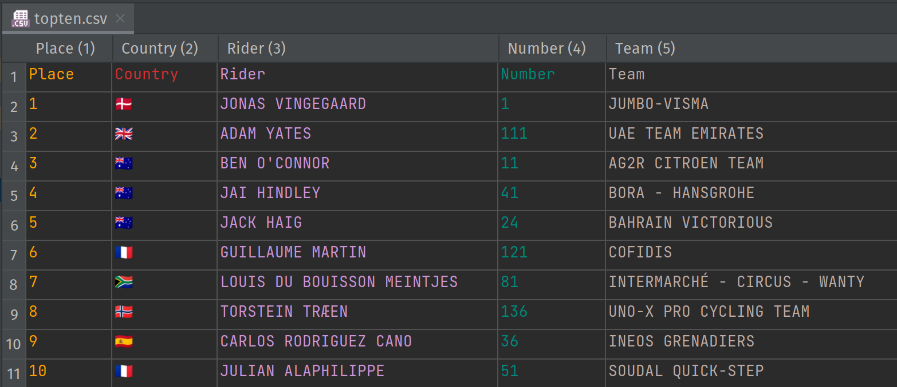

Processing Results for the Critérium du Dauphiné
Author: Paul King
Published: 2023-06-13 05:00PM
The 2023 Critérium du Dauphiné has just finished. Let’s examine the results using Groovy and DuckDB. For the purposes of this post, we are interested in the overall top ten riders in the general classification.
Results file
Our results are stored in a CSV file:

In a previous article, we looked at reading and writing CSV files using a number of CSV libraries. Today we will use a nice feature of DuckDB which can read in CSV files on the fly.
Our goal is very simple, just print out the information but grouped by each rider’s country.
Sql.withInstance('jdbc:duckdb:', 'org.duckdb.DuckDBDriver') { sql ->
println "Country Riders Places Count"
sql.eachRow("""SELECT Country,
rpad(string_agg(Rider, ', '), 40, ' ') as Riders,
rpad(string_agg(Place, ', '), 10, ' ') as Places,
bar(count(Country), 0, 4, 30) as Count
FROM 'topten.csv' GROUP BY Country""") { row ->
row.with {
println "$Country $Riders$Places$Count"
}
}
}Here we are making use of several built-in functions from DuckDB
including rpad to right pad the output, string_agg to aggregate
the riders (and their places) from the same country, and bar
to produce a pretty barchart.
Running this code produces the following output:
Country Riders Places Count
🇩🇰 JONAS VINGEGAARD 1 ███████▌
🇬🇧 ADAM YATES 2 ███████▌
🇦🇺 BEN O’CONNOR, JAI HINDLEY, JACK HAIG 3, 4, 5 ██████████████████████▌
🇫🇷 GUILLAUME MARTIN, JULIAN ALAPHILIPPE 6, 10 ███████████████
🇿🇦 LOUIS DU BOUISSON MEINTJES 7 ███████▌
🇳🇴 TORSTEIN TRÆEN 8 ███████▌
🇪🇸 CARLOS RODRIGUEZ CANO 9 ███████▌We can achieve a similar result using GQuery (AKA GINQ) using the following code:
var f = 'topten.csv' as File
var lines = f.readLines()*.split(',')
var cols = lines[0].size()
var rows = lines[1..-1].collect{row ->
(0..<cols).collectEntries{ col -> [lines[0][col], row[col]] }}
var commaDelimited = Collectors.joining(', ')
var aggRiders = { it.stream().map(rec -> rec.r.Rider).collect(commaDelimited) }
var aggPlaces = { it.stream().map(rec -> rec.r.Place).collect(commaDelimited) }
println GQ {
from r in rows
groupby r.Country
select r.Country,
agg(aggRiders(_g)) as Riders,
agg(aggPlaces(_g)) as Places,
'██' * count(r.Country) as Count
}We could use a CSV library to read in the data, but for this simple example
we’ll just use Groovy’s line/text processing capabilities.
GQuery doesn’t currently have built in equivalents to bar or string_agg
so we roll our own crude bar character function and aggregators, aggRiders
and aggPlaces.
Running this code gives the following output:
+---------+--------------------------------------+---------+--------+
| Country | Riders | Places | Count |
+---------+--------------------------------------+---------+--------+
| 🇦🇺 | BEN O’CONNOR, JAI HINDLEY, JACK HAIG | 3, 4, 5 | ██████ |
| 🇩🇰 | JONAS VINGEGAARD | 1 | ██ |
| 🇳🇴 | TORSTEIN TRÆEN | 8 | ██ |
| 🇿🇦 | LOUIS DU BOUISSON MEINTJES | 7 | ██ |
| 🇬🇧 | ADAM YATES | 2 | ██ |
| 🇪🇸 | CARLOS RODRIGUEZ CANO | 9 | ██ |
| 🇫🇷 | GUILLAUME MARTIN, JULIAN ALAPHILIPPE | 6, 10 | ████ |
+---------+--------------------------------------+---------+--------+For Groovy 5, we are currently exploring the possibility of adding more
functions in GQuery, like bar and stringAgg. If you are interested in this
functionality, please get in touch via the
mailing lists or
Slack.